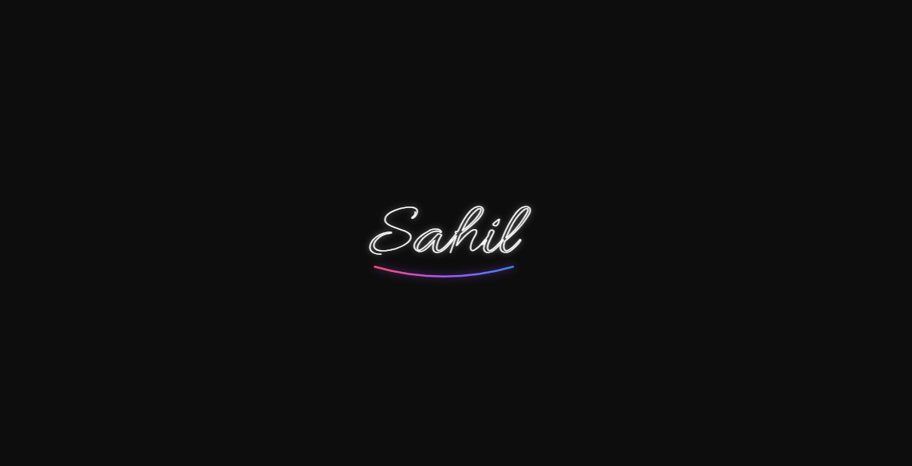
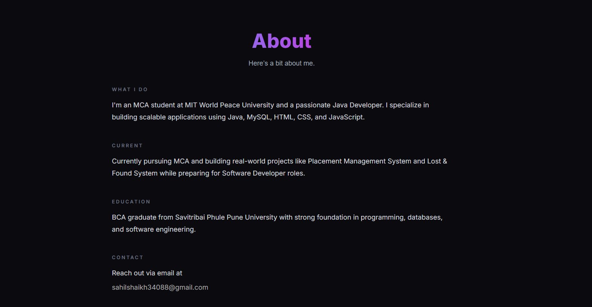
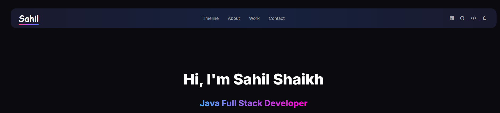

Portfolio Website
A modern developer portfolio website built with HTML, CSS and JavaScript to showcase my skills, projects and journey with a premium, animated UI.
Features
- Signature intro animation
- Light / dark theme with saved preference
- Auto-scrolling tech stack
- Project showcase with live demo links
- Animated timeline and About pages
- Fully responsive for mobile and desktop
Tech Stack
HTML
CSS
JavaScript
Screenshots


